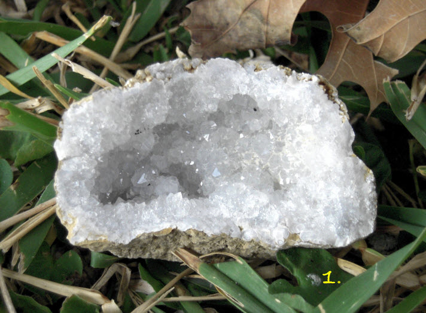
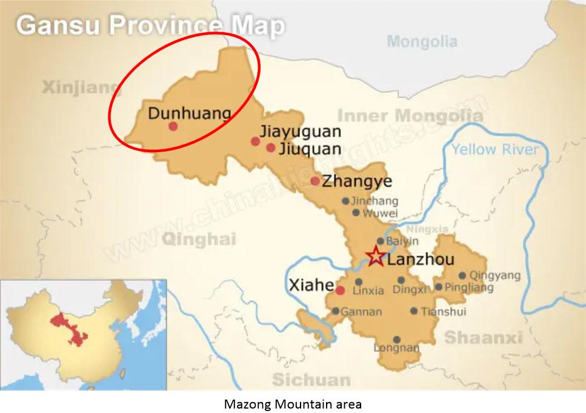
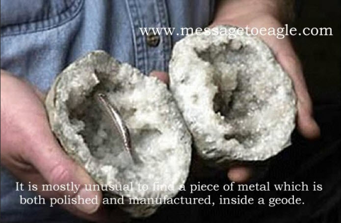
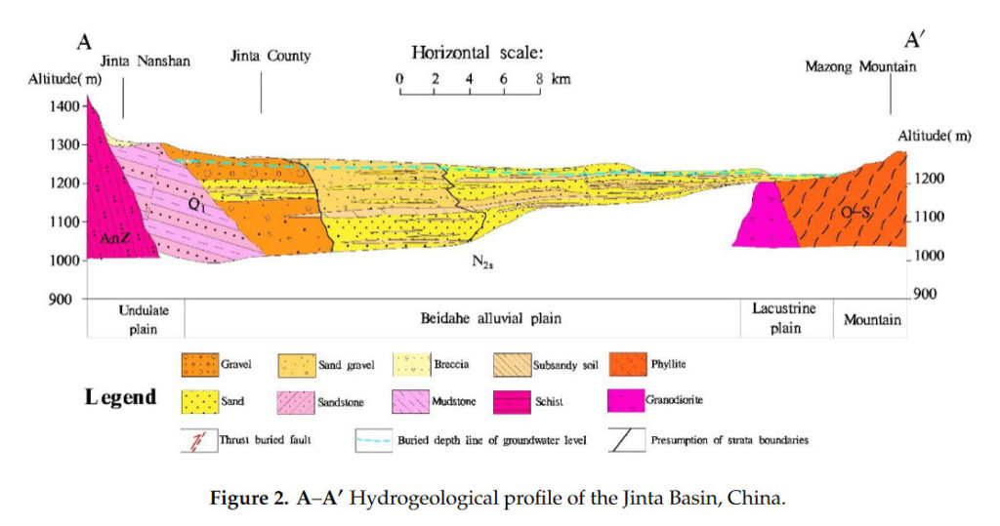
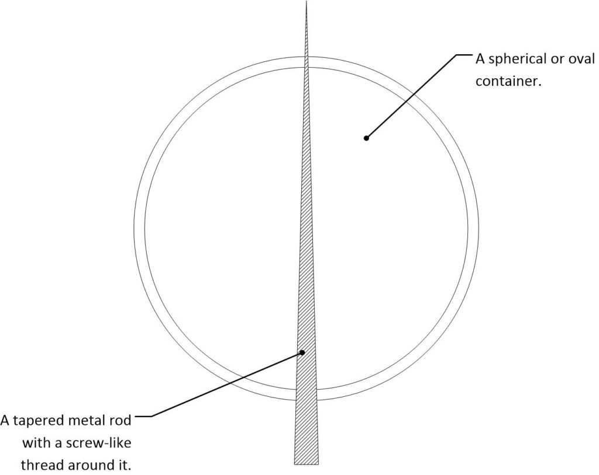
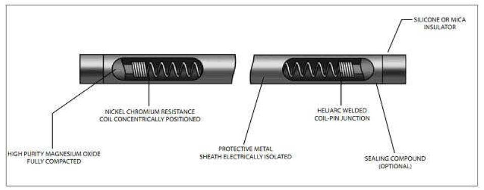
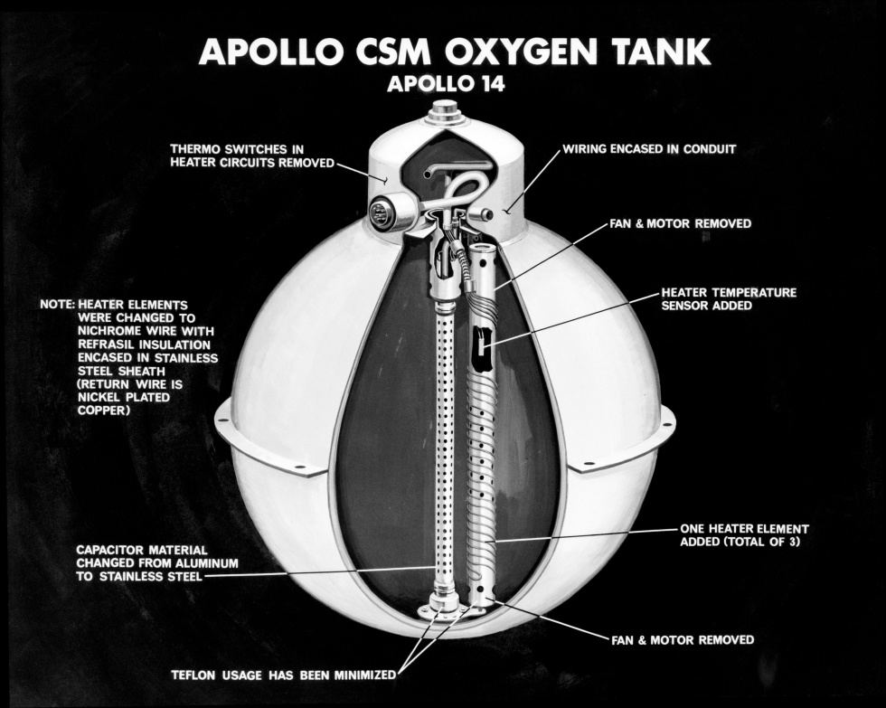
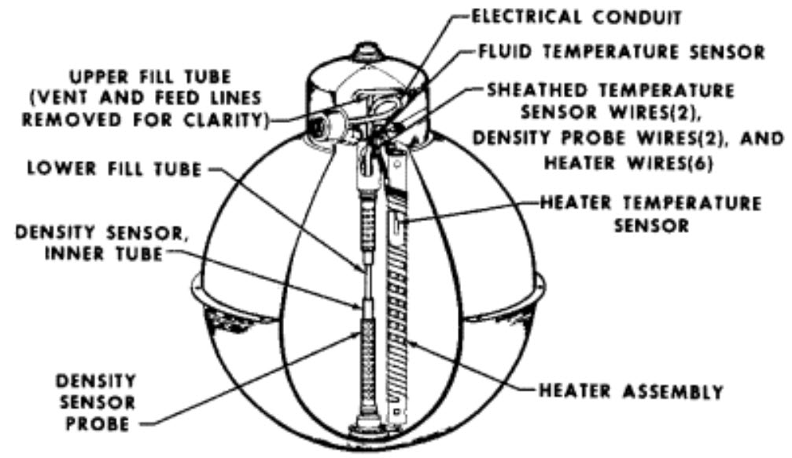
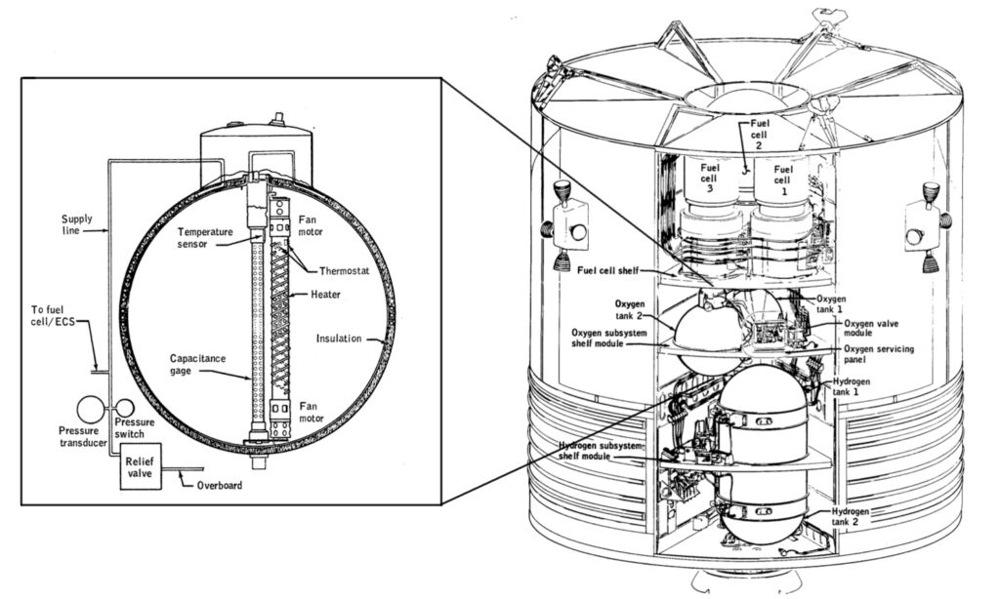
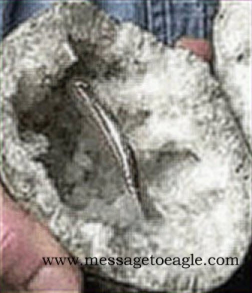

Here I am going to take a well-deserved break from the insanity of American-led global politics and discuss a curious find. A treasure, if your will. It is a mystery to some, and a curiosity to others. It is a geode with a polished, machined, and finished metal part inside of it.
Which is pretty much an interesting subject, anyways.
Just finding a geode to begin with is an excitement; an adventure. But to find one with a mysterious machined part inside is well… double exciting.
What is a Geode?

Geologic Occurrence and Formation
Geodes are not found randomly here and there. Instead they are usually found in large numbers in areas where the rocks have formed in a special geochemical environment.
Most geodes localities are in A) stratified volcanic deposits such as basalts and tuffs; or B) stratified sedimentary carbonate deposits such as limestones and dolomites. A diversity of other environments can also occasionally yield a small number of geodes.
The geodes are said to be formed in any hollow or cavity like areas such as in tree roots or animal burrows.
Geodes in sedimentary rocks are usually found in limestones, dolomites, and calcareous shale. In these deposits a gas-filled void can serve as the opening for geode formation.
Shells, tree branches, roots and other organic materials often decay away to leave a void for the formation of mineral materials. These cavities can be filled with quartz, opal, agate or carbonate minerals. They are generally smaller than the geodes formed in volcanic rocks.
The Discovery
An uncommon quartz geode embedded with screw-threaded metal bar was discovered by a geode collector in Lanzhou, China. His name is a Mr. Zhilin Wang. He found this stone on a field research trip to Mazong Mountain area located on the border of Gansu and Xinjiang provinces.

The pear-shaped stone is extremely hard and has an unusual external black color. It is about 8 x 7 cm and weighs 466 grams. It’s interior is filled with quartz crystals. Which seems to suggest a void eventually causing the creation of the geode over time.
The most surprising part of the stone is the embedded 6 cm long, cone-shaped metal bar which bears clear screw threads.

The screw-threaded metal bar – clearly a manufactured item – is tightly enclosed in the black lithical material.
Yet the fact that it was buried in the ground long enough for hard rock to form around it, which rather means that it must be millions of years old.
The screw thread width remains consistent from the thick end to the thin end, instead of varying due to the growth of rhe quartz crystals.
Truthfully, there is little that we can determine from the information available to us. Personally, I would love to have an analysis performed on the metal. That would tell us something about the part, and a few close up photos of the surface would indicate the manufacturing process and finishing techniques.
But what little we know can tell us a little more than what the rock find suggests.
The Age of the Geode
Using what we know, we can estimate the age of the formation of the geode by the age of the surrounding rock. We know that the geode was discovered by the Mr. Zhilin Wang while on a field research trip to Mazong Mountain area. This area consists of the Mazong mountains and the Jinta basin.

We present results from a multidisciplinary investigation of the Jiujing fault (JJF) system and adjacent Jiujing Basin in the southern Beishan block, western China. Structural and geomorphological fieldwork involving fault and landform investigations, remote sensing analysis of satellite and drone imagery, analysis of drill-core data, paleoseismological trench studies, and Quaternary dating of alluvial sediments suggest the JJF is a late Pleistocene to Holocene oblique sinistral-slip normal fault. Satellite image analysis indicates that the JJF is a connecting structure between two regional E-W-trending Quaternary left-lateral fault systems. The Jiujing Basin is the largest and best developed of three parallel NE-striking transtensional basins within an evolving sinistral transtensional duplex. Sinistral transtension is compatible with the orientation of inherited basement strike belts, NE-directed SHmax, and the modern E-NE-directed geodetic velocity field. Cosmogenic Al/10Be burial dating of the deepest sediments in the Jiujing Basin indicates that the basin began to form at ~5.5 Ma. -GeoScience World
It’s a “tough nut to crack”, but we are looking at geology that can date as far ago as 5.5 million years to the Late Pleistocene (129,000 to 11,700 years ago).
That’s a long period.
Never the less, it is unlikely that Anatomically modern humans (AMHs) of the Late Pleistocene were able to machine and thread metal tapered screws and place them inside a container for the geologic forces of heat and pressure over time to create a geode.
The Basic Geometry
The fact that this is a quartz geode indicates that it formed as the result of a stratified sedimentary carbonate deposit that surrounded a void. Over time, the forces of temperature and pressure acted upon the void and compressed it into the egg shaped geode that we see today.
If this speculation is correct, then it is possible that the virgin; pre-compressed void might have resembled something like this…

Of course, it’s really difficult to determine what the actual shape would be, or what the function was. What we only have to “go on” is the understanding on how certain types of geodes form, the dating of the rocky strata surrounding the object, and the observations of what is present.
Yet, even this tells us something.
This was a machined part or element within a subassembly that was buried and over time became a geode.
A Calrod
This polished metal rod like structure looks identical in shape, finish and appearance to an article that we, in the industry, refer to as a “calrod”.
Calrod heating elements generate dispersed heat by electrical energy conversion. Like many other heating elements, Calrod™ heaters also have an electrical supply running through them that gets converted to heat energy. A Calrod heater has a metallic alloy in its heating apparatus, which has resistance characteristics. This impedes the flow of current and transforms a portion of the energy into heat energy. This heat is passed on via radiation, and may be used to heat the surrounding air or water. Heat can be transferred in a number of ways, through conduction, radiation and convection. In the case of the Calrod heater, heat is at first radiated to the surroundings, but it can be further dissipated through other methods of convection or conduction as well. -Wattco
It’s a heating element that is used to maintain a temperature within a mechanism or chamber.

Internal Structure Of The Heating Element In The Calrod Heater
The heating element of the Calrod heater is made of an alloy that consists of nickel and chromium. This mixture is said to make up an ideal alloy since it tends to have a minimum amount of resistance against heat generation. It also has a melting point that is quite high. This simply means that it will have higher chances of lasting longer, and this is of significant importance because it will be exposed to long term heating. Another brilliant advantage of using this alloy in the heating element is that it can be shaped to fit almost any kind of structure because it is highly malleable.
Calrod Heater Protection
Wire insulation within the Calrod heater is such that it is wrapped in a ceramic filler-binder. It also has a metal overcoat that conceals the element itself from air contact. With ceramic coating, there is more protection given to the element, as it is protected from the oxygen coming into contact with the surrounding air.
Insulation Calrod Heaters
Ceramic materials are chosen for insulation and protection of the Calrod heating elements due to the fact that they conduct the least amount of heat or electricity. Therefore, these materials are ideal for preventing heat or electrical energy from escaping. With this being most suitable for the outer surface, the metal encapsulation protects the element from any possible damage that might occur through mishandling.
What I would like
I would personally love to have a metallurgical analysis conducted on the metal rod. I would also like to look at the surface finish of the rod under a microscope. Those two items would be remarkably helpful in determining what the purpose of the object could have been.
I would also like to have a Psychometry reading conducted.
Psychometry is a psychic ability in which a person can sense or “read” the history of an object by touching it. Such a person can receive impressions from an object by holding it in his/her hands or, alternatively, touching it to the forehead.
Psychometry is a form of scrying–a psychic way of “seeing” something that is not ordinarily seeable. Some scry using a crystal ball, black glass or even the surface of water. With psychometry, this extraordinary vision is available through touch.
A person who has psychometric abilities–a psychometrist–can hold an antique glove and tell something about the history of that glove, the person who owned it, or about the experiences that person had while in the possession of that glove. The psychic may be able to sense what the person was like, what they did, or how they died. Perhaps most important, the psychic can sense how the person felt at a particular time. Emotions in particular, are most strongly “recorded” in the object.
The psychic may not be able to do this with all objects at all times and, as with all psychic abilities, accuracy can vary.
And here we diverge into psychometry…
A Brief History
“Psychometry” as a term was coined by Joseph R. Buchanan in 1842 (from the Greek words psyche, meaning “soul,” and metron, meaning “measure.”) Buchanan, an American professor of physiology, was one of the first people to experiment with psychometry.
Using his students as subjects, he placed various drugs in glass vials and then asked the students to identify the drugs merely by holding the vials. Their success rate was more than chance, and he published the results in his book, Journal of Man. To explain the phenomenon, Buchanan theorized that all objects have “souls” that retain a memory.
Intrigued and inspired by Buchanan’s work, American professor of geology William F. Denton conducted experiments to see if psychometry would work with his geological specimens. In 1854, he enlisted the help of his sister, Ann Denton Cridge. The professor wrapped his specimens in cloth so Ann could not see even what they were. She then placed the package to her forehead and was able to accurately describe the specimens through vivid mental images she was receiving.
From 1919 to 1922, Gustav Pagenstecher, a German doctor and psychical researcher, discovered psychometric abilities in one of his patients, Maria Reyes de Zierold. While holding an object, Maria could place herself in a trance and state facts about the object’s past and present, describing sights, sounds, smells and other feelings about the object’s “experience” in the world. Pagenstecher’s theory was that a psychometrist could tune into the experiential “vibrations” condensed in the object.
How Does Psychometry Work?
Pagenstecher’s vibration theory is getting the most serious attention from researchers. “Psychics say the information is conveyed to them,” writes Rosemary Ellen Guiley in Harper’s Encyclopedia of Mystical & Paranormal Experience,
"through vibrations imbued into the objects by emotions and actions in the past."
These vibrations are not just a New Age concept, they have a scientific basis as well. In his book The Holographic Universe, Michael Talbot says that psychometric abilities
"suggest that the past is not lost, but still exists in some form accessible to human perception."
With the scientific knowledge that all matter on a subatomic level exists essentially as vibrations, Talbot asserts that consciousness and reality exist in a kind of hologram that contains a record of the past, present, and future; psychometrics may be able to tap into that record.
All actions, Talbot says,
"instead of fading into oblivion, [remain] recorded in the cosmic hologram and can always be accessed once again."
Yet other psychical researchers think the information about an object’s past is recorded in its aura – the field of energy surrounding every object.
According to an article at The Mystica:
"The connection between psychometry and auras is based on the theory that the human mind radiates an aura in all directions, and around the entire body which impresses everything within its orbit.
All objects, no matter how solid they appear, are porous, containing small or even minute holes. These minute crevices in the object's surface collect minute fragments of the mental aura of the person possessing the object. Since the brain generates the aura then something worn near the head would transmit better vibrations."
“Psychometry – Psychic Gifts Explained” likens the ability to a tape recorder, since our bodies give off magnetic energy fields. “If an object has been passed on down the family, it will contain information about its previous owners. The psychic can then be thought of as a tape player, playing back the information stored on the object.”
Mario Varvoglis, Ph.D. at “PSI Explorer” believes that psychometry is a special form of clairvoyance. “The individual performing the psychometry,” he writes, “may gain psychic impressions directly from the person to whom the object belongs (through telepathy) or may clairvoyantly learn about past or present events in the life of the person. The object may simply serve as a kind of focusing device which keeps the mind from wandering off in irrelevant directions.”
How to Do Psychometry
Although some believe that psychometry is controlled by spiritual beings, most researchers suspect that it is a natural ability of the human mind. Michael Talbot agrees, saying that
"the holographic idea suggests that the talent is latent in all of us."
Here’s how you can try it yourself:
-
-
- Choose a location that is quiet and as free of noises and distractions as possible.
- Sit in a relaxed position with your eyes closed. Rest your hands in your lap with your palms facing up.
- With your eyes remaining closed, ask someone to place an object in your hands. The person should not say anything; in fact, it’s best if there are several people in the room and you don’t know who the person is giving you the object. The object should be something the person has had in his/her possession for a long time. Many researchers believe that objects made of metal are best, theorizing that they have a better “memory.”
- Be still… as images and feelings come into your mind, speak them aloud. Don’t try to process the impressions you get. Say whatever you see, hear, feel or otherwise sense as you hold the object.
- Don’t judge your impressions. These impressions may be strange and meaningless to you, but they might be of significance to the owner of the object. Also, some impressions will be vague and others might be quite detailed. Don’t edit–speak them all.
-
"The more you try, the better you will become,"
Says Psychometry – Psychic Gifts Explained.
"You should start to see better results as your mind becomes used to 'seeing' the information. But you can progress; at first, you will be pleased to pick up on things correctly, but the next stage is to follow the pictures or feelings. There may a lot more information that you can obtain."
Don’t worry too much about your rate of accuracy, especially at first. Keep in mind that even the most renowned psychometrists have an accuracy rate of 80 to 90 percent; that is, they are inaccurate 10 to 20 percent of the time.
"The important thing is to be confident that you will gain accurate psychic impressions when you handle the object,"
Says Mario Varvoglis at PSI Explorer.
"It's also important not to try to figure out likely histories of the object, not to analyze and interpret your impressions to find if they make sense. It's better to simply observe all the impressions that come into your mind and describe them without clinging to them and without trying to control them. Often the most unexpected images are likely to be most correct."
Conclusion
Since there is little that we can learn from this object except that it appears to be the fossilized remains of some kind of chamber, the use of Psychometry might be useful in the interpretation of the object.
Barring that, the closest object that I can think of is something that resembles the oxygen tanks about the Apollo spacecraft.
Here is a nice illustration of it…

And, here is a nice diagram of it…

And here is a schematic showing the oxygen tanks where they were located inside the Apollo spacecraft.

You see, in outerspace, it isn’t enough to have a cylinder filled with air. You need to have a system that controls the temperature, and pressure of the vessel that contains the atmosphere that you breathe. Thus we have a vessel, tending to be spherical, with probes and a heater assembly.
Truthfully, this resembles the pre-compressed and aged mechanism that was found as a geode.
